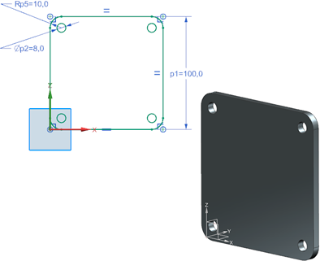

预计完成此练习需要：8–15 分钟
您的任务是创建一个正方形底板，并在拐角处含有安装孔，四个孔的直径应该相同，并且与拐角处的圆角同心。
使用如图所示尺寸，底板厚度为5 mm。

测试草图的设计意图：
修改长度。草图在修改长度之后应该仍然保持正方形。
更改拐角处圆角半径。四个拐角处的圆角应该要一起变化，并且半径相同，而且安装孔圆弧应该保持与圆角同心。
更改安装孔直径。四个安装孔圆弧应该要一起变化，并且直径相同。